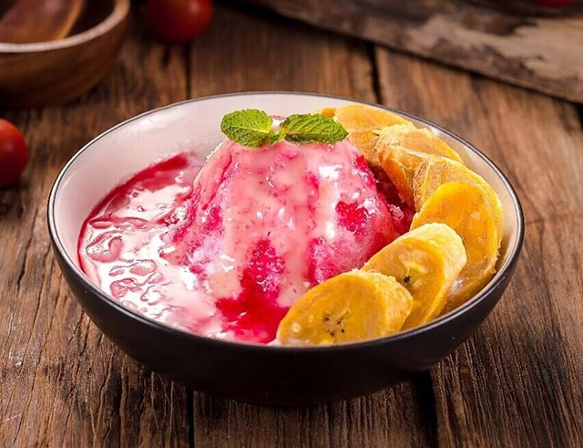

Resep Es Pisang Ijo dan Pallu Butung Khas Makassar

Bahan-Bahan:
Cara membuat pisang ijo- 200 g tepung beras
- 1 sdm tepung kanji
- 50 g gula pasir
- 2 sdm air daun suji pandan
- 400 ml santan encer
- 6 buah pisang kepok/tanduk/raja sereh yang sudah di kupas
- daun pisang/plastik tebal
membuat bubur :- 100 g tepung beras
- 750 ml santan kental
- 1 lembar daun pandan
- 1/2 sdt garam
bahan pelengkap:- Santan yang sudah direbus
- Sirop Merah Pisang Ambon
- Es Batu
Langkah-Langkah:
Cara membuat pisang ijo
Langkah 1- Letakkan bahan-bahan pisang ijo seperti tepung beras, tepung kanji, gula, air daun suji dan santan ke dalam satu wadah dan aduk hingga larut dan licin.
Langkah 2- Masak bahan tersebut dengan api kecil sambil aduk-aduk hingga kental dan matang lalu dinginkan.
Langkah 3- Ambil 2-3 sdm adonan, ratakan di atas selembar daun pisang atau plastik tebal dan letakkan pisang di atasnya lalu balut secara merata.
Langkah 4- Masukkan ke dalam kukusan yang dialasi daun dan kukus hingga 30 menit atau sampai matang. Angkat dan dinginkan.
Cara membuat bubur :
Langkah 1:- Letakkan bahan-bahan pembuatan bubur seperti tepung beras, santan, ekstrak pandan dan garam dalam panci, aduk hingga larut.
Langkah 2- Masak adonan dengan api sedang, aduk-aduk hingga kental dan matang lalu dinginkan.
Langkah 3- Nah, setelah semua bahan dimasak, saatnya penyajian es pisang ijo ke dalam mangkuk saji dengan memotong-motong pisang ijo. Selanjutnya tambahkan bubur di atasnya bersama santan dan sirup merah. Sajikan bersama es batu untuk mendapatkan cita rasa yang sangat nikmat saat berbuka puasa.